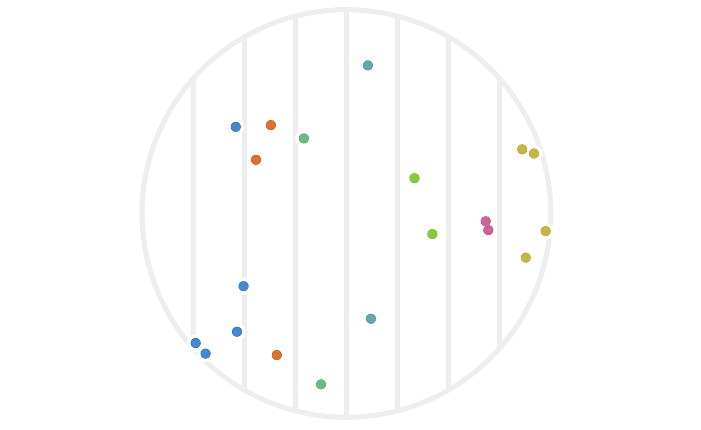
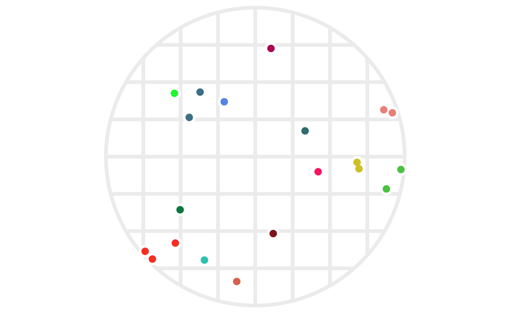

CHECK:
- Search this file for all instances of CHECK, IMAGE, XXX
- Check that the two pdf versions look good, including cross-references
- Check that the references header has no number
- Try to nicify the images in the pdf files
- Ensure that all references to figures in the text are done by mentioning a figure number.
Locality-sensitive hashes are techniques that dramatically speed up search-for-neighbors or near-duplication detection on data. They can be used, for example, to filter out duplicates of scraped web pages at an impressive speed, or to perform near-constant-time lookups of nearby points from a geospatial data set.
When you think about hash functions, you might think about hash tables, which is perhaps the most common use case. As a reminder, the hash functions used in a hash table are designed to map a data structure to an integer that can be used to look in a particular bucket within the hash table to retrieve (or delete) that element. Common containers with string keys like JavaScript object attributes and Python dictionaries are based on hash tables. Although they might not guarantee constant-time lookups, in practice they effectively provide them. Hash functions used for hash tables are called universal hash functions. [CHECK]
There are a number of other classes of hash functions as well. For example the SHA1 cryptographic hash function is designed to be difficult to reverse, which is useful if you want to store someone’s password as a hashed value. [CHECK] Another security-oriented hash function is CHECK, which is actually designed to be expensive to compute, as this can deter malicious ne’er-do-wells from easily building large lookup tables to be able to reverse a hash on more likely input values. Hash functions like these are called secure hash functions. [CHECK]
Here are what all these various hash functions have in common:
- They map a wide variety of input data types to discrete values.
- In practice, we care about whether or not two (or more) input values map to the same output (hashed) value.
Locality-sensitive hash (LSH) functions are specifically designed so that collisions of the hash value are more likely given two input values that are close together. Just as there are different implementations of secure hash functions for different use cases, there are different implementations of LSH functions for different data types and for different definitions of being close together. In this post, I’ll give a brief overview of the key ideas, and take a look at a toy example based on random projections of vectors into lower-dimensional spaces.
1 An example
It will probably be much easier to grasp the main idea with an example. (The “toy example” for random projections will come later. This is like a mini-toy example.)
Suppose you have a million people from across the United States all standing in a huge room. It’s your job to get people who live close together to stand together in groups. Imagine how much time it would take to walk up to each person, ask for their street address, map that to a lat/long pair, then write some code to find reasonable geographic clusters, and walk up to every person again and tell them their cluster number. It’s a disaster.
Here’s a much better way to solve this problem: Write every U.S. zip code on poster boards, and hang those from the ceiling. Then announce to everyone to go stand under the zip code where they live.
Voila! That’s much easier, right? The main idea here is also the main idea behind locality-sensitive hashes. We’re taking an arbitrary data type (a person, who we could of as a ton of data including their street address), and mapping that data into a set of discrete values (zip codes) such that people who live close together probably hash to the same value. In other words, the clusters are very likely to be groups of neighbors.
The distinction between walking sequentially up to each person versus parallelizing the work by asking everyone to find their own way to their zip code was not an accident. Besides avoiding whatever clustering algorithm you’d have to run on lat/long coordinates, another advantage of this hashing approach is that it’s extremely friendly to parallel processing. Despite caring about relationships within your data, you can still split up the data any way you like and compute the hashes in a fully parallelized fashion.
Another property of this example is that it is approximate in the sense that some people may live across the street from each other, but happen to cross a zip code line, in which case they would not be clustered together here. As we’ll see below, it’s also possible for data points to be clustered together even when they’re very far apart, although a well-designed LSH can at least give some mathematical evidence that this will be a rare event, and some implementations manage to guarantee certain bad cases (such as clustering of very far points or non-clustering of very close points) never happen.
2 Hashing points via projection
Let’s start with an incredibly simple mathematical function that we can treat as an LSH. Define \(f:{\mathbb{R}}^2 \to {\mathbb{Z}}\) for a point \(x\in{\mathbb{R}}^2\) by
\[ f(x) := \lfloor x_1 \rfloor; \]
that is \(f(x)\) is the largest integer \(a\) for which \(a\le x_1.\) (For example, \(f((3.2, -1.2)) = 3.\))
Let’s suppose we choose points at random by uniformly sampling from the origin-centered circle \(\mathcal C\) with radius 3:
\[ \mathcal C := \{ (x, y) : x^2 + y^2 \le 3^2 \}. \]
If we want to find which of our points in \(\mathcal C\) are close together, we can estimate this relationship by clustering together points \(a\) and \(b \in \mathcal C\) iff (if and only if) \(f(a) = f(b).\) It will be handy to introduce the notation \(a \sim b\) to indicate that \(a\) and \(b\) are in the same cluster. With that notation, we can write our current hash setup as
\[ a \sim b \iff h_1(a) = h_1(b). \]
Figure 1 shows an example of such a clustering.
Figure 1: Twenty points chosen randomly in a circle with radius 4. Each point \(x\) is colored based on its hash value \(h_1(x).\)
You can immediately see that some points are far apart yet clustered, while others are relatively close yet unclustered. There’s also a sense that this particular hash function \(h_1\) was arbitrarily chosen to focus on the x-axis. What would have happened with the same data if we had used instead \(h_2(x) := \lfloor x_2 \rfloor?\) The result is figure 2.
Figure 2: The same twenty points as figure 1, except that we’re using the \(y\) values (instead of \(x\) values) to determine the hash-based cluster colors this time around.

While neither clustering alone is amazing, things start to work better if we use both of them simultaneously. That is, we can redefine our clustering via
\[ a \sim b \iff h_1(a) = h_1(b) \text{ and } h_2(a) = h_2(b). \qquad(1)\]
Our same example points are shown under this new clustering in figure 3.
Figure 3: The same twenty points clustered via two different hashes — one using \(\lfloor x\rfloor\), the other using \(\lfloor y\rfloor.\) As before, points are colored based on which cluster they’re in; a cluster is the set of all points who share both their \(\lfloor x\rfloor\) and their \(\lfloor y\rfloor\) values.
2.1 Randomizing our hashes
So far we’ve defined deterministic hash functions. Let’s change that by choosing a random rotation matrix \(U\) (a rotation around the origin) along with a random offset \(b \in [0, 1).\) Given such a random \(U\) and \(b,\) we could define a new hash function via
\[ h(x) := \lfloor (Ux)_1 + b \rfloor, \]
where I’m using the notation \(( \textit{vec} )_1\) to indicate the first coordinate of the vector value vec (that is, the notation \((Ux)_1\) means the first coordinate of the vector \(Ux\)).
It may seem a tad arbitrary to use only the first coordinate here rather than any other, but the fact that we’re taking a random rotation first means that we have the same set of possibilities, with the same probability distribution, as we would when pulling out any other single coordinate value.
The advantage of using randomized hash functions is that any theoretical properties we want to discuss will apply without having to worry about pathologically weird data. Conceptually, if we were using deterministic hash functions, then someone could choose the worst-case data for our hash function, and we’d be stuck with that poor performance (for example, choosing maximally-far apart points that are still clustered together by our \(h_1\) function above). By using randomly chosen hash functions, we can ensure that any average-case behavior of our hash functions applies equally well to all data. This same perspective is useful for hash tables in the form of universal hashing; if randomized hash functions are a new idea for you, I recommend checking out Wikipedia’s universal hashing page.
Let’s revisit the example points we used above, but now apply some randomized hash functions. In figure CHECK, points are clustered iff both of their hash values (from \(h_1()\) and \(h_2()\)) collide. We’ll use that same idea, but this time choose four rotations \(U_1, \ldots, U_4\) as well as four offsets \(b_1, \ldots, b_4\) to define \(h_1(), \ldots, h_4()\) via
\[ h_i(x) := \lfloor (U_i x)_1 + b_i \rfloor. \]
Here’s the resulting clustering:
IMAGE 4
It’s not obvious that we actually want to use all four of our hash functions. The issue is that our clusters have become quite small. There are a couple ways to address this. One is to simply increase the scale of the hash functions; for example:
\[ \tilde h_i(x) := h_i(x/s), \]
where \(s\) is a scale factor (larger \(s\) values will result in larger clusters).
However, there is something a bit more nuanced we can look at, which is to allow some adaptability in terms of how many hash collisions we require. In other words, suppose we have \(k\) total hash functions (just above, we had \(k=4\)). Instead of insisting that all \(k\) hash values must match before we say two points are in the same cluster, we could look at cases where some number \(j \le k\) of them matches. To state this mathematically, we would rewrite equation (1) as
\[ a \sim b \iff \#\{i: h_i(a) = h_i(b)\} \ge j. \qquad(2)\]
Something interesting happens here, which is that the \(a \sim b\) relationship is no longer a clustering, but becomes more like adjacency (that is, sharing an edge) in a graph. The difference is that, in a clustering, if \(a\sim b\) and \(b\sim c,\) the we must have \(a\sim c\) as well; this is called being transitively closed. Graphs don’t need to have this property, and in our case as well, it’s no longer true that our similarity relationship is transitively closed.
It may help your intuition to visualize this new definition of \(a\sim b\) on our previous data points:
IMAGE 5
In fact, we can visualize all possible cutoff values (values of \(j\) in (2)) in a single image by using weighted edges, like so:
IMAGE 6
Yet another fun way to get an intuitive feel for how much information we’re getting from our hashes is to see which subsets of our circle are matched — and to what degree — by a given point:
IMAGE 8
2.2 Why this is faster
So far we’ve been sticking to 2-dimensional data because that’s easier to visualize in an article. However, if you think about computing 10 hashes for every 2-dimensional point in order to find neighbors, it may feel like you’re doing more work than the simple solution of a linear search through your points. Let’s review cases where using an LSH is more efficient than other methods of finding nearby points.
2.2.1 Zero linear search
If you have a huge number \(n\) of points, and it’s reasonable for you to index those points ahead of time — meaning, you can afford to compute all \(k\) hash values for each point — then you can completely avoid the linear-time cost of a brute force search for nearby points given a new query point. This speed-up is relevant in any dimension, including the simple 2-dimensional case.
2.2.2 Fewer hashes needed in higher dimensions
Another effect that may be less obvious is that you can get away with fewer hash values (a smaller \(k\) value) in higher dimensions. There are some mathematically sophisticated ways to quantify that statement, but it may be even easier to understand graph based on empirically derived data.
Here’s a summary of some random sampling I did in order to explore the relationship between various values of \(j\) for \(d=100\) dimensional data using \(k=10\) different random hashes: CHECK
IMAGE 9
CHECK the whole next paragraph What’s interesting here is that we get a relatively tight box plot for \(j\) values around CHECK. This means that we can choose the threshold \(j=CHECK\) in equation (2) and have fairly good confidence that our hash-based “nearby” relationship closely matches reality.
We can even quantify this precisely. Although this article doesn’t prove the following implications, the empirical evidence found CHECK(add link to code) strongly suggests that these are in fact the correct values:
\[ \text{dist}(a, b) > \alpha \Rightarrow P(\#\{i : h_i(a) = h_i(b)\} < j) > 0.95; \]
\[ \text{dist}(a, b) < \beta \Rightarrow P(\#\{i : h_i(a) = h_i(b)\} \ge j) < 0.05. \]
CHECK(the actual identities may end up being based on the left side using a \(j\) value rather than a distance to start with).
We might interpret these last two expressions as saying that we believe at least 99% of our pairwise relationships are correctly classified. And we’re able to do so while saving about \(O(n)\) speed.
2.3 Other data types and approaches
This article has focused on numeric, 2-dimensional data because it’s easier to visualize. Locality-sensitive hashes can certainly be used for many other data types, including strings, sets, or high-dimensional vectors.
There are also other ways to specifically measure the performance of a particular hashing approach. For example, CHECK.
Yet another ingredient to throw into the mix here are techniques to boost performance which can treat any LSH as a black box. My favorite approach here is to simply perform multiple lookups on a hash system, each time using \(q + \varepsilon\) as an input, where \(q\) is your query value, and \(\varepsilon\) is a random variable centered at zero. CHECK(add a bit about what this achieves; add a reference for it)
There’s a lot more that can be said about LSH techniques. If there is reader interest, I may write a follow-up article explaining the details of min-wise hashing, which is a fun case that’s simultaneously good at quickly finding nearby sets as well as nearby strings.
CHECK ensure that the references section is not numbered